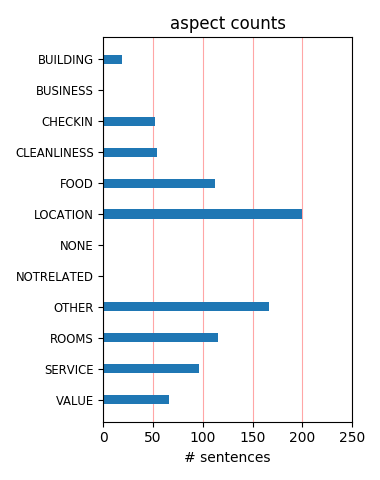
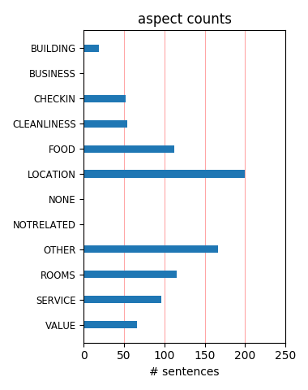

Great Hotel We stayed at the Porta Faenza on our honeymoon last July and we absolutely loved it. The rooms were immaculate and tastefully decorated and the safe in the closet was a lovely perk as was the free internet access. We would certainly stay there again.
Good Value We stayed for four nights in early November. The room was suprisingly large and the staff was very friendly. The breakfast was plentiful and above average. The hotel was very conventiently located, especially to the train station. We would definitely stay here again.
Excellent Location, Great price We went to Florence for our honeymoon and what a great place to stay. The rooms are clean, staff are very friendly; comparing with other hotels in Italy this was a big room. The best location (5 minutes walk from the train station, 5 minutes walk from the Duomo).
Nice My fianc茅 and I stay there during the summer and this is what we found. Overall was a good experienceHighlights -Good location, near to the train station -Good breakfast -Friendly staff Lowlights -Bed: the double bed was actually two single beds put together, what is not comfortable -Mosquitoes! Be ready for then.
Nice hotel We stayed for two nights in early April and found the hotel to be in a good location with comfortable accommodations. The staff was also helpful with directions, finding hours for museums, etc. It is not as warm and hospitable as a BB, but for a busy city like Florence, it is comfortable and I can definitely recommend it.
Great Hotel My wife and I stayed at the Porta Faenza March 22 23. We felt the hotel had great service, good location and the free internet was very helpful as well. The room was very clean and comfortable. The hotel staff always greated us with a smile and arranged for a walking tour of Florence for us. We would recommend this hotel for sure.
Great location, Huge room This was a great hotel on a good street. Very close (walking distance to the train station), but did not hear any noise at all in the room. We walked everywhere without any problems. Hotel staff was very friendly and breakfast had a huge selection. Our room was the biggest room I've ever seen in Europe. Would definetely stay here again.
Absolutely first class Absolutely superb 3 star located 5 mins from the station and 5 mins from the Duomo. Can't praise it highly enough. Stayed in Room 1 - supposedly a single but with a double bed and huge for the price. I would urge anyone visiting Florence to check this place out. No point paying through the roof when this place does the job for half the price.
Great Hotel I would recommend this hotel to anyone. Helpful staff, nice rooms, perks (free internet in lobby, great breakfast)...very accommodating. We stayed here with a 7 months old, and they provided hot water to warm a bottle, crib etc. The area was very centrally located, though maybe not as nice as some of the others, though I would definitely stay here again!
very enjoyable stay at the hotel porta faenza I was very happy with this hotel. It is clean, nicely decorated and most importantly...air conditioned! (an air conditioner that you can actually feel unlike everywhere else in Florence)....The location of the hotel iwas excellent....very close to the station and very close to the attractions... overall, I was very pleased.
Great Hotel!!! Great Hotel in the walking distance to all of the major attractions. Very nice, clean room. Stuff is very friendly and helpfull. We found out about parking on the second day. The first night was rip off because nobody tell us that hotel has contract with a parking on the next street. We arrived late at night. I thing that it's a great hotel for that price.
good value! nice hotel right around the corner from the train station. if you're traveling by train, this hotel is very convenient! the rooms are very large by european standards, and the free breakfast was great including cappacino! this hotel is within walking distance from almost all attractions, and also had free interenet in the lobby. porta faenza is a great value in a very cool city.
Nice place My wife and I stayed here for 2 nights during our tour of Europe in late October. I concur with previous comments regarding the large, clean room, friendly staff and great location. One exception being that our bathroom was quite small, especially the shower stall. The hotel is situated on a relatively small street so that traffic, i.e., noise, from the outside was minimal. Overall, I would recommend this hotel.
Nice We were on our way to Sardenia so were only in Florence for one night. This place was perfect. Location was within easy walking distance to sights and restaurants. Room was clean; also, it was large for Italian standards although shower stall was rather small. It's within a few blocks of train station so easily walked to from there. We flew in; taxi was ~25 euros from Florence airport. Definitely, would stay here again.
Great Hotel We just got back from our honeymoon in Italy and spend 4 nights at Hotel Faenza and loved it. The staff was very nice, they recommended a day trip of wine tasting to Chianti that was the highlight of our trip, and the hotel was clean and quiet. Free internet was a plus, breakfast was good, and location was good for getting to the train and all sights. Be sure to try the trattroia Natrone a few doors down, it was fantastic.
Wonderful Hotel! I chose this hotel based on the reviews from TripAdvisor and I couldn't have been happier. This hotel actually turned out to be one of my most favorite hotels on my whole Italy tour. The service is great, I loved the way the hotel was decorated and even better, the free internet in the lobby! The concierge even set me up with a great tour of Tuscany and wine tasting. I will definitely stay here again next time I am in Florence.
WONDERFUL March 2-4, 07 My family and I stayed in this hotel for 2 nights and booked a quad. The room was spacious, clean and the staff was extremely friendly. They had a nice breakfast and free internet. The location was wonderful near the train station and we walked from the train station to the hotel w/ our luggage. It is also very near the Duomo and the Bell Tower and restaurants. This is a true gem in Florence!! I would highly rec. this hotel
Good Choice We stayed three nights in June. Room 303 (I believe). It was nice sized, modern and clean as was the bathroom also. There was a balcony. No real view but very nice for afternoon/evening wine. Alberto was an excellent member of the staff who was friendly and efficient. The location is only a few blocks from the train station and about 10-15 minute easy stroll from Uffizi, Ponte Vecchio, etc. Good overall value. Definitely pleased and would recommend.
okay location, nice staff, okay room I guess for a three star hotel this is fine, but I've become accustomed to four star hotels so I was disappointed with Porta Faenza. The shower is tiny! I could barely fit and I am a small female. My husband was banging around in the shower everyday because it was so small. Forget about shaving your legs! On another note, the staff was very friendly and helpful, and the location was convenient, and the breakfast was sufficient.
wonderful stay family of 5 from NJ, USA We stayed 4 nights in August. Very helpul and friendly front desk. Great location next to train station. We found we could walk everywhere, even The Ponte Vecchio. Breakfast was very good, delicious coffee. We loved the well near the computer (great for the kids). Lots of stores and restaurants close by, staff recommened a wonderful restaurant just down the block. The shower door is not very efficient, so be careful in the bathroom!
Very Nice Hotel My husband and I stayed here for 4 nights and thought it was a very nice hotel. The people at the front desk were helpful, the breakfast was good, and the room was large and nicely decorated. It also has an excellent location. The only problem was that the bed was not super comfortable (and rather than being a large bed it was two twins pushed together). However, this seemed to be a trend in Italy and we did not find better beds at any of the other hotels we stayed at.
Lovely place - great location! Clean hotel with amazingly spacious rooms. Staff was gracious and helpful. Loved the free Internet access and availability of drinks - including espresso - from the hotel lobby in addition to the hotel mini-bar. (Want to take a glass of wine to your room? Just ask - prices were reasonable, too.)You really can walk here from the train station. Just turn left to Via Faenza from Via Nazionale. Everything else is close by. We will definitely stay here again!
Good Hotel. My wife and I stayed at this hotel for 3 nights in June/2007.The location is very good indeed. It is about 3 minutes walking from the train station, 7 minutes from the Duomo and no more than 10 minutes from Uffizi Gallery.The room was okay, although a bit small. It was fairly clean, and air-conditioned, which is great for Florence's summer. Breakfast was very good.The staff spoke good english, which is always a bonus. There is a computer with free internet access for guests.
Best Hotel of Our Trip We stayed 3 nights at the Porta Faenza - right in the middle of a 10 day trip - our first time to Italy. The Porta Faenza was recommended from a friend and it was perfect! The room was huge for Europe, shower was a little funky - but you got used to it - plus it was super clean. The location cannot be beat. The price was 80 euro - a steal for what we got! Breakfast was included. The staff was super friendly and made all sorts of reservations for us - we would absolutely stay again!
Bargain, excellent accomodations Our family of four stayed at the Hotel Porta Faenza in Florence during March 2006. We were pleasantly surprised by the spaciousness and cleanliness of the room and the stylish modern furnishings (bathroom as well). Staff was pleasant and very knowledgable about surrounding area and history. Excellent location within walking distance of the train station and hotel parking (reasonable daily rate OF $13.00 US). Best value and accomodations of the six hotels we stayed at in Italy.
great hotel My shopaholic girlfriends and I stayed here in September. The rooms were extreamly spacious (for 3 women with lots of luggage)!! The room itself and bathroom was very clean!! Hard wood floors and tiles, well lite and descent furniture. The staff friendly and helpful, buffet breakfast was descent. The location was good too, 10 min from train station (2 min by cab), 5 min to the cathedral(duomo) square. The price was really descent too, overall this is an all around great hotel. We are returning to this hotel in May 2005.
Great Hotel in a good location! I spent 4 nights here and had an excellent stay. My room was in the front of the hotel and with the window open it was a bit noisey but lets face it, it is a city and hey, close the window and the noise is gone. Good air conditioning makes this possible. If you want a good hotel with an excellent helpful staff and a nice comfortable room this is it. I would say here again and I reccomend it. I got more than I expected and I have sent much more and had much less. You won't go wrong with this one. Two thumbs up.
Avoid! We stayed here for one night.A few things:1) We were put in a smaller room due to them being overbooked.2) The room had bed bugs. My wife and I both had bites on our legs and arms.3) The room stank of smoke and stale air.4) The room was tiny and the bed was not a queen as we reserved.When we tried to change the room or get a discount for our troubles, we were told that it wasn't possible. The front desk woman didn't try to address our concerns. Basically, she just defended the cleanliness of her room and told the bed was a queen.Avoid at all costs.
An Excellent Choice We spent 8 nights at the Porta Faenza and were very happy with the accomodations and the price (package through Expedia). The staff is very friendly and helpful, the rooms are clean and of average size for Europe, it is fairly quiet, and it has an excellent location. Loved the fresh, crisp linens each day. The free breakfast is a nice perk, though don't expect a typical American style spread. The decor is a step up from a typical 3 star hotel. There are some nice restaurants close by and of course the Mercato. Highly recommended for the price.
Great hotel close to the centre of Florence Very nice, friendly hotel in a side street a few hundred metres from the centre of Florence. Stayed there as a family of five. Our room was light airy and clean and the staff were very friendly and helpful. Being a small hotel there were not lots of facilities, but there was a bar, a parking garage just round the corner (very useful in Florence)and an internet PC in the lobby for the use of guests. Everywhere was only a short walk away and we had a lovely four days in the hotel at a very reasonable rate. Would recommend
Loved this hotel Just returned from two days at this hotel, and wished it had been longer. Our room was on the top floor with a terrace, although we had only booked a standard room. The bathroom was huge (the shower would fit at least 3 people!!). Location is perfect, five minutes from the train station and easy walking distance from all the main attractions.Breakfast was very varied, and trattoria Enzo Piero two doors away is excellent for dinner, though you may need to wait if you have not reserved a table.We would definitely return to Florence and to this hotel.
A Wonderful Stay My husband and I stayed at Porta Faenza for a week during our honeymoon. We actually booked the hotel because of the good tripadvisor reviews. And it was just as lovely as everyone stated. I easily reserved the room through email and a faxed confirmation. The location was great! Near the train station but on a quiet street. Easy walking distance to wherever we wanted to go. We had a wonderful room, very quiet, up to date. Breakfast was good, the people were great and always nice. Easily recommend it to others, when we return we will be staying at Porta Faenza.
Nice hotel, very helpful staff I was very happy with this hotel. It is an easy walk to the hotel from the train station. Everything in this city is within walking distance. The staff was friendly and all english-speaking. The hotel offers cafe service in the lobby so you can get a coffee, soda or wine at any time. Our room was a little loud as it was right over the street. I'm sure that this is a problem throughout the city as the roads are heavily traveled. The noise didn't bother us enough to request a new room. The free internet service also came in handy and was easy to use.
A great deal for the price We stayed 4 nights at this very reasonable rate hotel in Florence.It's about 3 blocks from the Train Station so it's very easy to roll your luggage there. The hotel is clean, a large bed, great breakfast that's included and the hotel staff went out of their way to help us. The staff speak english. (they booked reservations us for tours in the Wine Country and helped us reserve a car)There are many wonderful restaurants within a couple of blocks of this hotel, which is always nice after you've been out exploring the city all day.When we go back, we will stay here again.
Michelangelo would be proud Fantastic hotel with friendly, useful, attractive staff in great location. Rooms are excellent size and clean, with a safe. Desk staff reserved tickets for us at the Uffizi and Accademia for no charge, and called ahead to our hotel in Pisa to notify them of our late arrvial. All with a smile. We were allowed to check in earlier than their agreed time, so we could put our bags in the room and go out for lunch. The night porters were friendly whatever time we turned up after going out in Florence. And the breakfast lady was always pleasant. Not a bad word to be said, best hotel ever!
Would recommend the Porta Faenza Just got back from a two week visit to Italy-four nights at the Porta Faenza. Agree with previous reviewers--good location and good breakfasts. Our room was large, but the bathroom (shower only) was miniscule. Hardly room to turn around in the shower. Mattresses were good.Helpful staff-everyone from the front desk (Beatrice was especially tolerant of all our questions) to the breakfast room. We agree with a previous reviewer who suggested they redo the directions from the train. We too walked unecessary blocks with luggage. All in all would stay there again, but ask for a larger bathroom.
Lovely This hotel was a really nice find. very close to the major attractions and easy to find from the train station. the room was very big for european standards, and although the bathroom was smaller, there was plenty of space for me and bf. the free internet was good and the breakfast was lovely. staff were really friendly, especially the breakfast ladies who never minded when me and bf got down to breakfast late every day and still let us eat and brought us tea and coffee! the breakfast is traditional continental cold buffet style but they do have a nice selection and a cool toaster thingy for warming your croissants!
Great Accomodations! Our stay at the Hotel Porta Faenza was very pleasant. I found the staff to be the most accomodating - extremely helpful and very friendly. The hotel is quaint and comfortable. The breakfast provided had many tasty choices. We were a group of nine friends visiting Florence and during our stay one of our group was mugged, severely injured and taken to the hospital. The staff at the hotel were especially considerate and helpful in assisting us with all aspects of getting our friend back to the USA. Special thanks to Sheila, who went out of her way to provide whatever assistance we needed (and friendly conversation).
Great little hotel Charming hotel, in a good central point and good value for money, 5 minute walk from Terravision bus drop off at station. Bathroom small but ok (shower 70cm sq). Everywhere clean, good selection at breakfast, friendly and helpful staff. Coffee from reception fantastic, freshly made for E1.00. A few other drinks also reasonable prices. Free internet in lobby very convenient. Trattoria Nerone 100 metres from hotel good food value for money.Sightseeing buses do not run very frequently in Feb. Check them out if you're pushed for time. We got the No 12 bus to Piazza le Michelangelo instead - great views. Runs every 15 mins.
Excellent for a 3-star We got a great deal from Expedia.ca for this hotel. We stayed here for the last 3 nights out of 8 nights in Florence. The first hotel was part of a package deal. It was okay but not as nice as this hotel. The room was a lot bigger. Only problem is if you are a big man like my husband, you might find the shower stall, which is 2 ft x 2 ft, too tight. The breakfast was also a bigger spread that our first hotel. There is also an excellent restaurant next door, Enzo Trattoria, and a cafe which serves sandwiches and coffee cheaper than cafes closer to famous buildings and monuments. Very convenient location but quiet street.
What a find! Found this hotel reviewed favourably on several sites, so booked with confidence. Requested, and was given the room with the balcony, Sooo sweet! (Room 303). Just a street away from the bus and railway station - ideal!The staff were extremely polite, helpful and interested in our outings every day. Spotless rooms, daily change of all linen, beautifully clean bathroom. The breakfast offered loads of choice and was plentiful. Lovely lady overseeing all the arrangements.So much to see and do in Florence, so make sure that your stay is topped off by choosing this gem of a hotel. We would certainly recommend it to anyone. Arrivederchi!
Great budget hotel Our stay at this hotel was booked thru go-today.com and turned out that it was a nice place to stay. Nothing extra special about the rooms, but comfortable and clean. The location and the staff make this a good place to stay. It is close to the train station, markets, and sites. The staff was very friendly, knowledgeable about their city, helpful with booking tours or advice on where to eat, and sympathetic with troubles I encountered with the Bank of Toscana, a bank I do not recommend using their atm or any other services. I would definitely recommend this hotel and stay there again if I get the chance to return to Florence.
The best hotel in Italy!!!! This hotel, in a centrally located area in Florence, is fabulous all around. The staff, the rooms, the staff, the breakfast, the staff, the price and the staff!!The hotel employess were amazing. They were all super friendly and helpful on all accounts, from reservations at the museums, to mapping out directions, to getting us a taxi at 5AM for our early morning flight, absolutly superb!!! All smiles all the time!! The rooms were immaculate, and a great size. Breakfast each morning was delicious. There is no doubt in my mind that I will be back to Florence and staying at the Hotel Porta Faenza!!!!! Thanks or a terrific vacation.
Definitely would recommend Porta Faenza We three ladies stayed at the Porta Faenza Sept. 7th 8th and loved it. Our room was huge (I followed a previous reviewer's suggestion and booked a quad--great idea), very clean and inviting. Our bath not only had a bathtub, but a separate shower as well. The staff was very helpful and friendly and the location was great, especially for our early morning trek to the train station. We found the location very desirable and felt safe at all times of the day walking to and from the hotel. The breakfast was very good and opened at 7:30 AM as the staff had told us. We would definitely stay here again and recommend the hotel to others visiting Florence.
Great hotel, good value for money This hotel is close to the main train station of Florence, approx 5 mins walk and about 10 -15 mins to main city centre.We were pleasantly surprised by our room, the high ceiling had lovely wooden beams and the room was spacious. Bathroom was clean. Breakfast was ok - we didn't bother getting up for it after the first morning!There are several good restaurants within walking distance and all the main tourist attractions are close by.An extra benefit of the hotel is that they have free internet access which is great for that lastminute research or online check inIf you're looking for a hotel that is great value for money, then definitely go for this one!
Great Hotel I stayed here with my parents in April 2005. We had a triple room that was quite large. You could actually sleep 4 or 5 in this room because the couch was a futon as well. Like I said before the room was large and clean, it was next to the street which was quiet except for scooters that passed occasionally.The location was pretty good. 5 minute walk from the train station and a 15 to 20 minute walk from the center of Florence - Ufizi Gallery, The Duomo, etc.This was the best hotel we had in Italy during our 8 or 9 days there. (we also stayed at the Hotel Miami and the Hotel Canada in Rome) There is little not to like about this hotel, plus we got it for a great price in my opinion.
Great hotel, great price What can I say? It was an amazing experience. The room was large by European standards. Everything was impeccably clean. We requested (and got) a small balcony. The staff was knowledgeable and had wonderful recommendations for outstanding restaurants. Americans will probably find the pillows uncomfortable, but they are better at this hotel than in most of Europe. Breakfast was a feast; as large a continental breakfast as I have seen. The location was amazing, right in the center of everything. I know the city pretty well and when we booked the hotel, I did not expect it to be near as nice as it is, given the amazing location and reasonable price, but this is a true deal.
Great Hotel. Excellent Location Read reviews about this hotel on tripadvisor.comall are true.hotel is 5 min walk from train station (very important) and is within walking distance to all major attractions.Rooms are small yet very clean. Nothing like taking a good shower after a long day of site seeing. Staff is very warm and helpful.When comapring other 3 stars hotels in Europe, this hotel is a real bargain.Ask for a quite room if you do not like the street noise, and you will only hear your partner's snoring..Highly reccomended (this is not a paid adverstisement...)Important tip - you can write the hotel to pre-order tickets for the musuems and they will happliy do it for you - at no extra charge
Great place to stay! We stayed 2 nights in Florence at Porta Faenza. This place is worth every penny! Here is why:- Location: Very close (3 min. walk) to the Central Train Station without being in a dangerous area.- Staff: Extremely helpful and recommends great restaurants.- Room: Good size, courtyard facing rooms are very quiet, bathroom is clean, TV is available and most of all, they have AC.- Breakfast: Lots of food, cereal, breads, cakes, cold cuts, cheeses, fruits, etc.- Internet: Access is free and available until midnight.- Luggage keep: You can leave your stuff there even after you check-out if you plan on visiting the city for the afternoon.All in all, GREAT place to be staying at while in Florence!
We call it the "Floodin' Faenza" We spent 4 nights at PF and had a great stay overall. It was near the train station (which was handy for day trips) and the market where we bought all our cool loot. There are also 2 good restaurants just feet away. The staff was always very helpful and friendly. Breakfast was good and our room was clean. Our only issues were that it was tough to get our room cool enough and the bathroom flooded like crazy everytime we took a shower. I mean CRAZY! The way the shower was designed it was impossible to keep the floor dry. We reported this to the front desk but nothing changed. Oh well. We just used all the towels to dry the floor after we showered every morning (I mean ALL the towels).
Nice little hotel This is a nice, friendly, well run little hotel. It's location is great, only a couple of minutes walk to the central train station and 5 minutes from the centre of Florence. One word of warning; if you get a room overlooking the street ask to be moved to another room as we got very little sleep on our 1st night due to traffic/general noise. Having said this, when we asked to be moved the next morning it was sorted out with no fuss and we were able to view the alternative room before we moved to make sure it was ok for us.Rooms are not huge but have all that you need for a few days stay and given some of the prices that you can pay for a hotel room in Florence I thought that this was very good value for money.
A Charming hotel with a great staff This hotel is located in a great location. The hotel staff was so helpful to us (Anne). We forgot some medication in Venice and Anne called the hotel in Venice to have it DHL'ed directly to the Porta Frenza the next day. You are only a few minutes away from the city center and the train station. The hotel made our honeymoon a special occasion with their great service. Towels and sheets are changed everyday. The only downside was the pillows were to flat, but thats all I can say that is negitive about this hotel. They do have a garage if you are planing on driving to Tuscan towns. If we ever go back to Florence we will stay there. We stayed in four hotels in Italy and this was by far the best.
Good Value Stayed 1 night. July 2005. Booked quad room. Location very close to station so perfect if arriving by train. Do not take a cab as we did, as the hotel is literally one street away from the station and walkable in about 5 minutes, truthfully. Cab ride was 15 euros. Hotel is cute, good reasonably priced cappucinos, usual breakfast as in all other hotels. Accomodation was good value for the price. 130 Euros quad occupancy. Located close to the market and walking distance to all attractions. Safe to walk in area even at night. We did however find it a bit away from the action especially at night and next time I will likely stay closer to the Ponte Vecchio, shopping area as the nice coffee shops, shopping is all in this location.
SIMPLE WONDERFUL my friend and i stayed here for 6 nights over thanksgiving week recently and it was wonderful. the hotel is very charming,yet elegant without being too stuffy. the staff is very friendly and helpful. we enjoyed the heated towel rack in the bathroom which was quiet large with deep tub, large shower and bidet...beautiful cobalt blue tiles, very nice. the room was elegant with navy blue and gold appointments, wood built-ins and wood floors. good firm beds with clean sheets everyday, (this wasn't necessary, but was nice) centrally located close to everything yet on a quiet street with little traffic. a very good value for the money, i would go back in a heart beat, you won't be disappointed! bennie stevens, yonkers, new york
Well priced, good location The hotel is very conveniently placed on a quiet street close to the train station. It's a 5 minute walk to the Duomo and about 15 to the Ponte Vecchio. The hotel was clean and the rooms (we had 2 doubles and a triple) were very presentable. Worth noting, the third bed was a full size single and very comfortable! The reception staff were always very pleasant and helpful. Also, prior to our arrival, they had pre-booked museums and restaurants for us. Looking at the prices of hotels generally in Florence, I thought that the Porta Faenza was very good value and we certainly appreciated only having to trundle our suitcases a short distance from the station. (We flew into Pisa, which has an easy and excellent train connection into Florence).
Porta Faenza, a little gem ! Great little hotel. We moved from it's sister hotel, the Alba because it was noisy but found this hotel really good. Location was excellent, 5 mins from the station and 10 mins from the Duomo. Our room was large, adequately furnished and quiet. There was satellite TV inc BBC and CNN but not Sky and a fridge and safe. The only negative was the bathroom which was rather small.The front desk staff were very helpful and provided us with a great tip for a restaurant just 30 yards away, Enzo Pierro - we had a fantastic meal and the restaurant was busy, mostly with italians - always a good sign.The complimentary continental breakfast was adequate to set you up for the day.We have no hesitation in recommending this hotel and would stay again.
What a find! We just got home from a trip to Italy, booking rooms in Venice and Florence based on Trip Advisor reviews. This Florence hotel certainly lived up to its great reviews. The location, a couple of blocks from the train station and a 15 minute ride from the airport, is excellent. The neighbourhood offers great shopping, restaurants and major tourist attractions within a 5 - 10 minute walk. The hotel staff were wonderful, upgrading our room at no cost since the hotel wasn't fully booked, and recommending excellent restaurants. The hotel is clean, the breakfast is adequate and the room and the bathroom were lovely. The bed was so comfortable we didn't want to get up in the morning.We will definitely stay at Porta Faenza Hotel again when we go back to Florence.
Best hotel on our trip! By the far the best hotel we stayed at in Italy! Extremely charming, cute decor but all of the modern amenities. Our room was HUGE for a European hotel - 2 twin beds and a day bed and lots of space to move around. Large bathroom as well. Free internet access for guests in the lobby and a decent breakfast in the mornings. Very friendly, hepful staff.Also a great location, close to the train station and maybe a 5-7 minute walk to the Duomo and only about 10 minutes to the Uffizi.Only possible complaint I could come up with is they still have very antiquated hairdryers in the bathrooms, which was somewhat baffling considering how modern everything else was (they even had electronic keycards for the rooms, which you don't see often in European hotels).
Free Beer! About the only thing that would make this place better value would be free beer. Altough they did have free web access! We stayed at Porta Faenza in April with our three teenage children and it was fabulous. Great central location and we had one room for the five of us (not easy in Europe). The room, on the first floor was great, had lots of space, a big bathroom and very comfy beds. Staff are great and could even recommend an after hours pharmacy for a daughter with an eye complaint. We were driving (don't know why Italian drivers have a bad reputation - I found them great!) and used the Hotel's private car park which was just up the end of the street. Breakfast was great (lots to eat - and healthy too) and the choice of local restaurants was mouth wateringly supurb. We'll be back - thanks guys!
Great location, great value .Stayed four nights at Porta Fanza in October 2006, the location is fantastic; quiet side street with virtually no traffic. Two minutes from railway station (but we never heard a train) and only five to fifteen minutes walk to all the major attraction. Room was clean, well equipped (small safe, TV, mini bar) and spacious with clean bedding every day. We even had a balcony (Room 303) although views were not special! There were no hot drink facilities in the room and no real lounge area, other than that we couldn't fault hotel or its staff. The nearest restaurant is well worth trying: Enzo Pietro, for excellent value rustic Italian food and good house wine. Also, you must try Rabone, in the central covered market for lunch. Great food for just a few Euro among the friendly locals. Brilliant
Better directions from train station We enjoyed our stay in Porta Faenza. The staff was both nice and helpful to us. However, the directions posted for walking from the train station need to be improved. We walked up and down looking for via Nazionale and were getting quite frustrated. We finally started down a street that LOOKED like it should be the right one (based on the map) and sure enough, one block down it becomes via Nazionale. However, at the train station the street is labelled something else (sorry I didn't write it down).So my instructions would be to exit the train station and walk toward the green island and church. The bus stop will be to your left. At the very end of the bus stop is the street that turns into via Nazionale. Go down that street 2 blocks and turn left onto via Faenza.I hope this helps someone.
Great stay in Florence, Italy My husband and I had the pleasure of staying at the Porta Faenza Hotel in Florence in April of this year. The hotel is on a quiet street close to everything. We had a front room and the room was very quiet. The people at the hotel were exceptionally nice and helpful. The hotel has a great breakfast room and internet connection. We ate at a restaurant right down the street and had great meals. We had rented an apartment in Rome, and although we enjoyed our stay, we realize now that when you travel to a new place it is nice to stay in a hotel with a staff that can help you find your way around. We thought this hotel was way above its rating and was an excellent choice in Florence. The hotel is near the train station and we walked to the hotel after arriving from Rome. Very convenient to everything.
Wow, wow, Wow! This was the best hotel stay I have experienced in a long time. The staff and service was outstanding. Our room was spacious. Everything in the room worked. The entire hotel was meticulously decorated and furnished in the most eco-friendly and historically preserved way. Many of the old parts of its structure were centerpieces in its design. The utilities in the room would not work without a key being in the control panel, so you could not leave the lights on and waste electricity when you were not in the room. If yuo open the window, the AC automatically shuts off. In all, it was apparent that Florentines are generally eco-conscious. I just never imagined going to that level of detail in addition to the old we'll wash the towels on the floor idea. I hope to return to Florence, and I would not even consider staying anywhere else.
Great Place to stay Alberto Porta Faenza is located in Florence at Via Faenza. It is just a 2- 3 block walk from Santa Maria Novella train station. It is newly remodeled. Has one of few elevators in Italy that several people can board at one time and haul luggage. All the staff speak English and all have great personalities, friendly, and helpful. Breakfast was excellent with several meats, cheeses, fruit. Excellent restaurants around there.Rooms were spacious and cleaning service excellent. The various piazzas are a distance away but within 20-25 minutes walking time.The open air market (leather, you name it) at San Lorenzo is just a few blocks away. The room rate posted on the door cited 206 Euros a nite. We bought a trip package thru Go-Today, so of course we didnt pay that. This is a 3 star at least and closer to a 4. I would stay there again.
Yes...give the Porta Faenza a Try Good location, especially if you're traveling by train. We easily rolled our bags back and forth and it was close to the rental car facility to get our car for Tuscany. The hotel itself is very clean and nicely furnished. The desk clerks were all helpful, especially the young lady who helped us with several phone calls when we had to do a quick change of plans. (museum strike for a day).Conveniently, the best restaurant we ate in in Florence was right next door! Enzo and Piero's is a locals place with fabulous fresh foods and excellent prices. It was so nice to have only a 20yard walk to our room after a 3 course meal of Tuscan specialties. The other good restaurant was Bibo's in the Oltarno, just across the Ponte Vecchio. Great Florentine steak and deadly grappa. Porta Faenza is a good home for a stay in Florence.
Great Deal Nothing more to add that you won't read from the other reviewers. This place is just a dynamite deal. The breakfast spread was great..fruit, variety of cereals, typical European cold cuts spread, great breads.We took the train from Rome...10 minute walk to the hotel on a quiet street. Room was BIG...just like on their web page.Great bathroom...shower..tub.Can walk most anywhere you need to go.. 10 min from Medici Chapel.. 15 min from the Doumo. Great view from top of the Doumo if you want to hike 463 steps. Cool indoor food market 10 min away , around a corner or two towards the Medici ChapelHint. We rented a car, drove back thru Sienna ( fyi, stayed a night at the Pallazo Ravizza, will write a review on that hotel)on way to Rome. If you do this and use Hertz..make sure you use the downtown office. Its right near the train station, can walk to it.
Beautiful Porta Faenza Hotel For our third anniversary, my husband and I chose to travel around Italy by train. This is also the reason we chose the Hotel Porta Faenza. This hotel is conveniently located just a short walk from the train station. When we arrived, the lady at the front desk gave us a warm and friendly greeting. We were very happy with our room which had two comfortable beds and high ceilings. My husband was most impressed with the speakers in the bathroom which allowed him to not miss a minute of BBC World News. The room was clean and had a large ensuite bathroom which was very nice. In the morning before we left to go exploring, we went downstairs and had a nice continental breakfast which was included in the price of our room. We were both very happy with our three night stay at the Hotel Porta Faenza and highly recommend this hotel to others.
Decent hotel with good location My wife and I stayed for 2 nights in early April. We found the hotel to be a good place to stay and a relatively good value.The hotel is close to the train station and provides a good point of access to easily walkable Florence. The Duomo, Uffizi and other sites are all within a 10 minute walk. The street is relatively quite so even though our room overlooked the street we were able to sleep with the windows open.The decore is dated and the walls and floors show signs of wear, especially in public spaces. The bathrooms are decent, but not too large. The linen is changed every day. However, if you are looking for glamorous lodgings, this is not the place. Porta Faenza is a good functional hotel.The best part of the hotel is the staff. Extremely friendly and helpful. We also enjoyed the Trattoria Enzo e Mario right down the street.
Warm hospitality We decided to stay at the hotel based on some of the comments on this website. We were very pleased with our spacious room, separate tub and shower bathroom, and the warm, attentive staff. During our stay in Florence, we wanted to see everything but the lines were very long even during the month of Feb-Mar. The hotel staff offered to make reservations for us which made everything easier. They even called to confirm our flight back home. The breakfast was okay...no hot food, but it sufficed. They have a morning attendant that will offer coffee, cappuccino or expresso to have with your breakfast. The only qualm I have is that the window in our room faced the Faenza street. During all hours of the night, you can hear conversations and cars driving by. Ask for a room away from the street. Other than that, our stay was wonderful! We will definitely stay there again and recommend this hotel to our friends.
Excellent place to stay! We stayed at Porta Faenza for 4 nights and we enjoyed our stay very much. We would stay there again. Our hotel room was huge as was the bathroom - we even had a deep soaking tub! Our room faced the street so it was a little noisy, but OK with the windows closed. Our room was spotless and kept that way. The included breakfast was a typical continental breakfast and very good. The hotel staff was friendly, helpful and spoke excellent English. They made reservations for us at the Uffizi and Academia. All major sites are within walking distance although Pitti Palace is a bit far and the cobblestones are hard on your feet. Santa Maria Novella and the train station are just a couple of blocks away. There is a laundromat about 3-4 blocks way, turn right on leaving the hotel and turn left on Via Nationale. The laundromat is signed in English as well as Italian and contains and Internet point (.50 E for 15 mintues).
Wonderful experience! I read a lot of reviews before booking over Easter weekend April 6-9, 2007 and ended up making two reservations: one at Porta Faenza and one at Santa Maria Novella. I ultimately decided to try Porta Faenza and am so very glad I did. The hotel is located to the left (quiet part of Via Faenza) off Via Nationale from the train station.The room was huge and very clean with a very nice bath and tub. My husband was particularly happy that the room was quiet, yet sunny. There was free internet in the lobby and the breakfast was as much as one could want. The hotel staff couldn't have been nicer and were extremely friendly and helpful. There was a trattoria down the street that had great food, and a nice bar on the corner that had happy hour drinks and free appetizers.I honestly can't think of a single negative and would stay there again in a minute. It was close to everything, including the San Lorenzo street market and terrific in all ways.
Charming staff The reviews on Tripadvisor persuaded us to choose this hotel and we were not disappointed. Even after a long and tiring journey, it was easy to drag our bag from the railway station to the Porta Faenza. Once inside we were kindly welcomed and immediately felt at home. The room (at the back opening on to a courtyard) was small but extremely quiet. The bathroom was a good size and well equipped. In the morning the breakfast, which included fresh fruit, was all we could have wished for.The position of the hotel is ideal. The Via Faenza is not busy but it is in easy walking distance of all the artistic and architectural attractions that we wanted to see. In the evening there is a good choice of restaurants a few minutes away.The staff, from the chamber maids to the management, were very friendly and extremely helpful, charming in fact. We stayed four nights and would use this hotel again. We felt it represented very good value for money and we liked its atmosphere.
Fantastic location, good hotel We stayed here for two nights on Aug 29/30th 2007 based on all the great reviews on this site and it was great! This hotel is a few minutes walk from the train station and a few minutes to some great cafes, shops and sights. There was free internet all day (you just have to get a password from the front desk), the complimentary breakfast buffet was great, there鈥檚 a safety deposit box in the room. Yes, the beds are two twins pushed together but we found that at 9 of the 10 hotels we stayed at throughout our trip. The only issue we had was that our room (# 111) had a musty stale smell to it which lingered on our night clothes for a few days after (we kept our suitcase closed the rest of the time) and was facing the street so it was a bit noisy in the morning, but otherwise this hotel is great value, great location and very helpful staff (they even have baggage storage if you鈥檙e not leaving until later on in the day!). Would definitely recommend and stay again!
Lovely, Lovely hotel When I arrived here midweek after lugging my suitcase around the Eurostar and train station, I was surprised to see how close the hotel was from the train station! I could literally roll my unwieldy suitcase to it within 15 mins. And the best part - you don't hear any of the traffic noise once in the hotel. The front desk was great and they have free wi-fi access here, as well as a computer and printer in the lobby for guests - very convenient.The room was so nice, with a big bathroom, a flat screen TV (which I never watched, but it was still nice to have) and a little balcony to relax on when the weather is nice. Alas, the weather was not nice when I was there but it was still nice to know that it was an option!The rooms were clean and bright, the hotel was within walking distance of the Duomo and the main train station, there were plenty of restaurants about and the atmosphere was friendly.Great place, not too pricey for a one or two night stay. Will definitely come back when next in Florence!
Central location We had two nights here recently and were very impressed by the hotel and Firenze in general. Our room wasn't large but very comfortable with a small balcony that actually overlooked the glass ceiling of the lobby area!! Breakfast was adequate and the capuccinos excellent. All the staff were excellent and very helpful. We had trouble finding the hotel especially as we drove into Firenze from the Tuscan countryside and had to find parking. There were many roadworks which made it more difficult. After eventually finding a parking garage and dragging our bags quite some considerable distance, we found out that the hotel has a garage quite close by. Our fault for not checking. The hotel is ideally situated close to many of the major tourist attractions and Firenze is very easy to get around on foot. You will go into sensory overload with all the amazing art and architecture. Don't forget to visit the original statue of David by Michelangelo which resides in the Gallerie dell'Academia - my favourite attraction by far.
Porta Faenza - No need to look elsewhere The first thing we were really happy about with this hotel was the location - literally less that 5 minutes walk from th train station and only 5 minutes to the main shopping and tourist destinations. Staff were very friendly - room was quiet large compared to others we stayed in. Staff more than happy to offer suggestions and advice on where to go and what to do. Breakfast was adequate and more than we really needed. Bathroom had lots of room and shower space was quiet large compared to others we had in italy. This is a really nice hotel in a great spot with a good feel to it - I have already recommended it to friends heading to florence - which by the way is an amazing city that 2 nights was just not enough in. We were there in the middle of summer and while it was very hot and uncomfortable outside the Air conditioning in the room made it more than comfortable inside. If you are looking for a great florence hotel for a reasonable price I strongly recommend you contact Hotel Porta Faenza
Bed was Best Just got back from 5 nights in Florence staying at the Porta Faenza. We booked this hotel after reading all the rave reviews on Trip Advisor. Ideal location if travelling by public transport but you could never find it driving yourself.( Who would want to?)Have to say that it was one of the noisiest hotels we have ever stayed in - unfortunate to get room 101 at the front of the hotel - do other travellers to Florence agree that -forget the bikes, the dogs or the ambulances- the noisiest sound is the sound of cases being wheeled along medieval streets! Anyway bathroom flooded first night which staff soon solved; breakfast was adequate but very boring - particularly on day 5. The staff were pleasant and very,very helpful and the towels were all changed every day. But the best thing was the bed! One of the largest and definitely one of the most comfortable beds we have ever slept in - certainly in the marriott class. So, great for 2-3 days exploring, reputation is well deserved but if offered Room 101 consign it to Room 101!Bob
Floored by Florence We (wife, three children - 23, 21 and 17 and me) began our Italian holiday in Florence at the Hotel Porta Faenza. A short walk from the train we found the hotel's entrance on a quaint street that had a number of indoor/outdoor establishements serving meals and libations.The front desk staff was welcoming and helpful and remained so regardless of who manned the desk. Breakfast was ver good and was probably the best of three hotels we visited in Italy. Meats were good, fruit was good and cereal and bread offerings were fine. All that we could have expected. Service was always friendly.Rooms were actually more spacious than I had expected and the air conditioning worked perfectly. That was key, given the 95 degree temperature outside.Hotel is well-located for a family that tends to walk or use public transportation as it was just a few blocks from the train station and, in the other direction, just a short wak to the Duomo and other sights. This was a great way to start our vacation in Italy and we sould gladly return to the Hotel Porta Faenza in the future.
Very charming, and would stay here again! As part of our 3-week escape to Italy this past October, my husband and I decided on booking Porta Faenza based on great reviews from this site. We're so happy we did! We stayed here Oct 18-20.The hotel is very charming, and is in a great location on a cobblestone street. I had printed out the directions posted by another reviewer, which was much easier to follow that those posted on Faenza's website.Our room, 108, faced the back, and we experienced no problems. All was great, and a really great feature is that there is a speaker in the bathroom, where you can enjoy listening to whatever TV station is currently on in the room. Cool!Breakfast was also very nice, with a large selection of pastries, cereals, mortadella, and sliced cheese. I didn't know this until the first time looking for the coffee, but one of their staff comes in to take your hot beverage order - cappuccino was excellent!The extra feature of being able to use a PC for internet is great, they even have a printer for you!This is a great hotel, and we will stay here again!
Loved Porta Faenza We ended up at Porta Faenza because it was part of a travel package through Air France. Will definitely stay here again, as the location was perfect, centrally located, near the train bus station, within walking distance to the duomo, and other attractions. The restaurant Pizzaria Navone is just steps away. Upon leaving the hotel, go to your right you're there! We loved this place, unique eclectic, great food, and reasonable prices. One night we tried two types of pizza, which was delicious, and then another evening we tried the filet mignon with pepper sauce, which was absolutely fabulous. The hotel also has internet access with free PC use just off the lobby. The elevator is small, but beats not having one, like many hotels in Europe. The breakfast, which was included in our package, was very substantial, and everything was fresh. We loved the granola/museli, which tasted like it was homemade. Front desk staff spoke English and were friendly helpful. It was raining, they loaned us some huge umbrellas to use. Little things like this leave a lasting impression.
A very comfortable hotel Booked based on previous Trip Advisor comments. As I have now come to expect these comments prove very helpful !The hotel is very convieniently situated near the main railway station, which was great for us as we did day trips to Pisa and Rome. Hotel is in a back street 5 minutes from the station, although first impressions from the outside are prehaps not that promising the room was superb and above average I would have expected. The room we had on the 3rd floor has obviously been tastefully modernised and refurbished fairly recently with good quality finsishes. The double glazing was very effective in cutting out noise from the street restaurant down the road and early morning barrows ! Air-conditioning was welcome and the ensuite very plush. Breakfast was a reasonable selection on continental style with the limited selection of fresh fruit being the only reservation. Staff were pleasant and helpful. Computer with internet access available in foyer for free in the mornings. Overall can recommend as an exxcellent base for exploring the city or by rail to further afiekd
Excellent location! Traveled to Florence with a group of friends and stayed at this lovely hotel in February. The location of this hotel in Firenze was excellent. It was central to all of the major sites in the city and only one block from the Santa Maria Novella train station. The room was large and faced the street. Noise from the street was minimal with the windows closed. They served a wonderful continental breakfast each morning which consisted of juice, coffee(made to order), breads, rolls, cakes, cheese, cereals, yogurt and fresh fruit. It was very plentiful and a nice way to start the day. The staff at the hotel were great especially Shiela, Alberto, and Ann. Always helpful and accomodating. You can walk to all of the major sites from this hotel within 15 minutes. Some sites not to be missed are the Duomo, Ufizzi, Church of San Marco, Accademia, Ponte Vecchio, Mercato Centrale, Piazza Michealangelo and the San Miniato Church (for evening Vespers). Some restaurants that were outstanding included La Fontacine, Za Za and Buca Mario. The fresh pasta is a must. I would not hesitate to stay at this hotel.
Wonderful Stay! We thoroughly enjoyed our stay at the Porta Faenza. The staff at the reception were extremely helpful and spoke excellent English. They also booked up our visit to the Uffizi for us via the hotel's website. We would certainly advise this as the queues are monumental! Our room was very spacious with a lovely big walk-in shower plus a separate bath.The room was kept immaculately clean, with fresh towels each day. Our room, 303, had a lovely balcony looking over the roof-tops at the back of the building. Great for a welcome rest after sight-seeing! We really enjoyed the breakfast with its excellent variety. The restaurant, Pietro and Enza, to the right as you exit the hotel, was especially good with cheerful staff and excellent food. It's probably best to pop in and book a table as it fills up very quickly. The Nerone slightly further along is very good too.The Guelfa in Via Guelfa is also worth a visit.For a really good map of where the hotel is, just go to Google maps and put in the name of the hotel. We did not find any trouble in locating it unlike the previous reviewer! We would certainly recommend the Porta Faenza!
Average place Location is close to the train station which is convenient, but the hotel is a bit off the beaten path for all the shops and restaurants. Just a few blocks walk to where the action is, no big deal.I was there with two other sets of travelers. The first room I was put in was a walk in closet that they crammed a bed into. The bathroom was not clean. I complained endlessly until they moved me to a bigger room, they charged me 20 Euros more a night which was fine. Once in the bigger room it was much better. Singles, book yourself a double and pay the extra money its well worth it.The breakfast was good, plenty of hot coffee and fresh pastries. They could have used some more nutritious food, like better fresh fruit, but it was adequate.The internet service was intermittant. You have to get a password from the desk and when the printer ran out of ink the night staff couldn't be bothered to walk into the office to get more ink or print out the password on the regular computer, something which the day staff immediately took care of. The internet service was extremely slow, if you have to do anything important better to walk up the block to an internet cafe and pay for it.
What a find! I booked this hotel based on all the great reviews on TripAdvisor - and was not disappointed! We originally were only going to stay 2 nights but changed to 4 at the last minute and were so happy! Porta Faenza is in a GREAT location if you want to explore Florence. A great home base to start from - everything is within walking distance - I think the farthest we walked was like 15 minutes. Easy walk from the train station. Hotel staff was always very friendly and accomodating. Room was large, comfortable and had everything we needed. Very quiet and peaceful. Breakfast was good - meat, cheese, yogurt, fresh fruit, pastries, cereal, etc. A couple good restaurants within 150 feet of the front door. Free internet, but you have to get a code for 2 hours at a time which is kind of a pain sometimes. (We needed to work a little unfortunately, and also used our computer to do more research on local activities.) Highly recommend this hotel - you will not be sorry! Also - if you are active - do Per's Bike Tours! Best thing we did on our vacation - beautiful bike tour through the hills of Tuscany - absolutely amazing. Duomo is a must-see, as is Accademia - David is breathtaking! Can't wait to get back to Florence!!
Great Time at Hotel Porta Faenza The Hotel Porta Faenza was our home away from home in Florence. It is very near the Santa Maria Novella train station, but on a quiet little street. It is near most of the main attractions -- we walked everywhere and one of our group is in a wheelchair. A 7 minute stroll to the Duomo, 10 minutes to the Academie and a 15 minute walk to the Uffizi. It's convenient location also made a side trip to Pisa and our travel to Rome via train very easy. There are plenty of little restaurants nearby, we liked Il Porscupino which was three blocks away--fresh pasta and friendy service. The room was large and clean and was handicap accessible as advertised (and was much better than the room at the four star hotel we stayed at in Rome). The breakfast was fine, mainly croissants, cereal and some meats but there was enough variety that we didn't tire of it after 6 days. We booked this based on all of the reviews on Trip Advisor. The staff at the Hotel were extremely pleasant and welcoming and genuinely interested in doing what they could to ensure we had a pleasant holiday. They booked our reservations to the Uffizi and Academie for us and even made arrangements for laundry and offered friendly input.
Ideal hotel close to train station, tourist sites, inexpensive restaurants This is a really nice hotel - more than a bed and breakfast that my girlfriend and I expected. Room was relatively spacious, clean-clean-clean. Nice firm queen-size bed as we requested. Air conditioning great. Bathroom also -- nice thick towels.Very helpful staff - my girlfriend broke a wheel on her suitcase on the cobblestone street, and the desk person marked the map where she could find replacements at different prices and qualities. Late at night, the desk clerk saw me leaving with a bag of laundry and directed me to a nicer laundry a bit farther but indeed cleaner.Just down the block is a great little restaurant Nerone that we mistook at first for a pizza counter, but inside it was a lovely full restaurant with reasonably priced dishes to die for. And a Chinese-run grocery that will custom-make delicious sandwiches for you for less than the paninis available everywhere (and cokes for 58 cents vs. 3+ euros elsewhere!)The breakfast is really fine, a notch above the ordinary BB fare.The only downside was the wireless internet died shortly after we arrived on Friday, and summers in Italy, that meant it was down until Monday, when we left for Siena.
A lovely hotel with big rooms We stayed here for the last 3 nights of a 2 week tour of North Italy. This was the nicest hotel we stayed in. Our first room definatelty had the 'Wow' factor. This was a massive room, with painted ceilings and a good sized bathroom with shower cubicle plus a deep bath. Unfortunately, our first nights sleep was a bit of a nightmare due to a neighbours dog who decided to bark all through the night and then we were prematurely woken by workmen banging around on a nearby building.Due to lack of sleep we were a little upset that the room was not better sound-proofed. As we did not wish to spend our whole stay with ear plugs (as forced to in the previous night) we spoke to reception to see if we could be moved to a quiter room. The receptionist was very helpful and gave us a choice of 3 other rooms. We settled for a front-facing room on the 3rd floor. We had peaceful nights sleep and even had a terrific view of Florence. For a great meal and night out, go to Za Za's. Amazing food and wine. If you like steak, don't miss this place. We would definately recommmend this hotel. It is a gorgeous little Hotel with brilliant rooms. Try to avoid the back-facing rooms, unless you have a bone to throw that barking dog !
Great location and value The Porta Faenza is in great location and considering we paid 900 Euros for 5 nights in the heart of Firenze, it's almost hard to complain. Its two blocks from the train station and in the heart of the old city.The room was defnitely large and comfortable with nice furnishings.The bathroom was small but well designed in typical European fashion. I guess one must be objective in these reviews. To be critical, but it was mostly comical to us, the showerhead was one of those handheld-type shower heads that adjusts up/down a long pole. When the pole would get wet and warm, the mechanism would slowly, slowly work its way down during the course of the shower. For me, I deal with these type of situations. I mean, here I am on vacation in a beautiful country, perhaps the main cradle of Western civilization, the last thing I am going to do is get upset about something like this or complain and demand to have it repaired!! Forget it, I am heading to see some sights, drink some grappa and have fun! However, I do know people that would be really upset about this and would probably complain daily and harangue the staff about this. The staff were absolutely friendly and helpful, and the breakfast was great -- maybe the best capuccino that I ever had.
Great Place to Stay Just returned from spending 5 days at the Porta Faenza hotel in Florence.Rooms:-----Had a large room (303) with a small balcomy facing in onto the courtyard. Room was pleasant and good sized, very clean and nicely furnished. Had a seperate shower / tub.Food:----Breakfast was good: Selection of fresh fruit, and an array of good quality pastries, cereals, yoghurts and cakes. Coffee freshly made and of good quality, much better than some other hotels in Italy.Location:-------Via Faenza is very handy for the train station, as others have said: Also easy to walk from there straight down to the Duomo and other sites in the centre of town. The area has a few backpacker hostels nearby, so seems lively with student travellers, but always felt like a safe place to be, even late at night.Staff:----Staff were always helpful and friendly towards us: Although we hadnt booked an early check-in, we were allowed to our rooms when we arrived at 8.00 am. Good recommendations for places to eat nearby. Overall:-----Had a great time staying here: This would be my first choice hotel when I return to florence.BTW: I can thoroughly recommend the restaurant il pizzaiolo if you want a pizza: Cheap and *excellent* pizzas there...get there when it opens (7.30pm) as it gets crowded quickly
Excellent accommodations! We chose this hotel based on the reviews here and couldn't have been happier with our decision. We stayed at the Porta Faenza in Mid-august with our 8 and 12 year old. The hotel has a great central location, but is still in a quiet area. We could and did walk all over the entire city with no problems and no complaints from the little ones. It was extremely convenient since we arrived and left by train as it is very close to the station. Florence was our favorite part of our Rome/Florence/Venice trip this summer. The staff were courteous, breakfast adequate (no hot foods, but still plenty of delicious items to fill you up) and it was a nice treat to have the free interent desk in the lobby. There was some street noise early in the morning, but we found that in every city and not sure if that's entirely avoidable anywhere as people always seemed to be rolling carts. The prices was very reasonable and the room very spacious. Our favorite restaurant was a few doors down - Pizzeria Navone and we went back there a few times. The prices were better then tourity restaurants and the food was delicoius and fresh. We walked around day and night and felt very safe. We rented a car one day and took a tour of Wine Country, and Siena. It was our favorite part of the trip. We had a wonderful stay and lots of fond memories of Porta Faenza.
Very Disappointed This did not appear to be a three star hotel. The rooms were tiny (even by European standards) and not well-appointed. There were dust balls on the floor when we arrived. There were no carpets or rugs in the rooms. In the bathroom, all three drains were slow, causing water to accumulate in the sink, shower and bathtub while using them. The mirror in the bathroom was stained. The hose for the shower head in the bathtub was broken and leaking. The linens did not appear fresh (or particularly clean).There were very little space for putting clothing away except for a very small space for hanging clothes and three tiny drawers, one of which was broken (did not open). There were two of us in the room, and we could not unpack our suitcases. Breakfast was limited to 7:30 to 9:30, which is not very accommodating to travelers from different locations, or for those who want to get an early start on their day. One morning I arrived for breakfast at 7:40 am and the doors to the breakfast room were closed. I had to find the staff person responsible for opening it up, and she seemed annoyed with me with I asked for her to do so. There seemed to be only one iron for the entire hotel, which you had to return right after using. There were no ironing boards at all.The neighborhood left a lot to be desired. I did not feel safe walking back to the hotel at night; I took taxis if it was not daylight.The free internet service in the lobby was a plus.
8 days in Florence We have visited Florence before and loved it. Had a descent hotel before but after seeing all the write ups on this hotel decided to try it.We were not dissapointed, an excellent hotel at a reasonable price.Location is excellent, right in the middle of FlorenceI believe they have a garage if you wish to drive in FLorence (I don't recomend it!)All of the staff are extremely friendly, half of them speak fluent English and the other half are English! I would deffinitely strongly recommend this hotel if you are an English speaker and can't speak any Italian. They are heavily orientated towards american tourists, which also works fine for us Brits.Doesn't seem very child friendly, (which is excellent for me!), don't have baby or toddler chairs in the breakfast restaurant, (I overheard someone asking for one this morning), which was the only child we saw in the whole week. There aren't really any views out of the bedroom windows, Via Faenza is not enormously attractive to look at, nothing wrong with it though it has several useful little caffe's and mini markets to get your water from etc.We stayed in the one place for 8 days, which shows how much we love Florence, and will certainly go back to the the Porta Faenza on our next holiday there, which hopefully speaks well of the hotel.Our favourite restaurant is Trattoria Il Porcospino, go down Via Faenza towards town, turn left at the end and it is in front f you, opposite the Cappelle Medici. Food is excellent as is the service, at least one of the waiters is very funny. Avoid if you have no sense of houmour at all...
A good location Just returned from a great trip to Florence staying four nights at the hotel Porta Faenza. I booked this hotel after viewing many reviews and reports mostly on tripadvisors. The hotel is an easy walk from train or bus stations, main attractions are also easily reached by foot from the hotel. On checking in, the room we were given on the first floor was small, cramped and dimly lit, with little natural light coming from the one window. I asked for a different room and was offered a room on the same floor, this room was also dimly lit but was bigger and the high ceiling made it feel roomier, two windows let in plenty of light, bed was large and comfy, bathroom was not very big and was cramped, shower good. little or no noise from outside or corridors made for a peacfiull nights sleep.Breakfast was O/K the lack of a hot food option was for me slightly dissapointing, hot drinks were served by a waitress. The hotel has no seperate lounge or bar areas, a couple of seats beyond the reception area and a limited selection of drinks available from the reception, the one time we used this facility they had no white wine!!! There was also a free internet access available. All staff were friendly and helpful. Overall we were more than happy with our stay. For a short break in Florence this hotel was more than adequate.To be honest I think that some of the reviews that described this hotel as wonderful and fantastic were somewhat over the top. This hotel offered nothing more or less than I would expect from a three star hotel costing 130 euros per night. I do hope this review helps.
Great Florence Hotel My wife and i just got back from a 5-night stay at the Hotel Porta Faenza for our honeymoon. We had a great time in Florence and thought the hotel was great for a 3* in Florence. The hotel is not 'luxury', nor does it claim to be as a 3*, but for the price, proximity to attractions and the train station, this was a very friendly, clean, and decent hotel. They gave us Room 303, which has a large balcony with a few chairs. However, we were unable to use it because it was freezing in Florence the week we were there. If you stay when it is warm, request this room. The room size, however, is a bit smaller than some of the others, but you do get the balcony.The staff was very helpful and friendly. They assisted with contacting the airport to recover my wife's lost luggage. They also booked museums and a great Chianti area wine tour with CAF Tours. They also popped open a bottle of vino for us.The breakfast was decent. Nothing hot, but I believe that is how europeans serve breakfast. There was a good selection of cheeses, meats, and pastries, juices, and coffee.Our only issues with the hotel were that there was no clock or alarm clock in the room (though they did give us wakeup calls), not having an alarm clock made me nervous. I did discover towards the end of the week that you could set the TV to turn on automatically at a specific time. Also, the bed was not the most comfortable, but I dont' think many are in Florence unless you pay a few hundred more for the Westin or similar.The hotel also provides free internet access in the lobby.Thanks Porta Faenza for a great honeymoon.
Great deal I stayed at Porta Faenza while attending a conference at the Fortezza da Basso. The choice worked out great.1) Location. It was the closest hotel to the conference site. It was very close to the train and bus station (easy to walk). It was very close to all the major attractions. The restaurant Enzo e Piero on the same block is a good choice for meals. I also found a supermarket about four blocks away.2) Price. Better than the deals the conference had worked out with other hotels and very reasonable even considering I am coming from the US.3) Quiet. The room was very quiet. I heard very little from other rooms (although I may have been lucky with the other guests). I slept very well.4) Clean. Spotless room and they cleaned it very well every day.5) Staff. Very pleasant, helpful, smiling, and all spoke English. 6) Internet access. Wireless access. Just go to the front desk and tell them for how long you need access. They give you a temporary username and password and off you go. No extra charges for this.7) Good breakfast. While there weren't any hot food choices, there were croissants, other breads, four choices of cereal, yogurt, cake (excellent), deli meats, cheese, juice, milk, and a couple of other things I can't remember. And you can get tea or a capuccino, and the lady that services the tables remembers what you like.If you haven't been to Europe much, the room is very small by US standards, the bathroom doesn't have a bath tub (only a shower), there were no drawers, and the closet was very small. But this is not unlike what I have found elsewhere in Europe, especially in a location with older buildings. The bed was actually large.
Great location Booked this hotel on recommendations from this site. Glad I did. The hotel is in a great location, had good rooms, breakfast, and staff. However, I do agree with many of the reviews, it is a little hard to find at first. Via Nacionale is not easily identified from the train station. Another way to get there from the train station is to depart the station on the left side and walk towards the left to the first traffic light. Cross the street and continue straight ahead for two blocks. Turn right at Via Faenza and the hotel is on the right a short way up. This was a much easier way to get there.We did eat at Enzo E Piero Via Faenza, but we did not get a recommendation from the hotel. We passed it on the way back to the hotel and decided to eat there because of the very rainy night. At 7:30, no one was there, but at 8:00 when we arrived, it was packed. We went back to the hotel to wait while we were on their waiting list (they do not take reservations) and got in about 9:30. What I did not like was that the bill was just an adding machine tape and we had to guess what each item was. I did ask for a more detail bill, but they did not understand what I was asking. I was presented with another bill, but that was not much more help. I definitely recommend this hotel. Rooms did have A/C, were clean, comfortable, and quiet. Breakfast was 7:30 - 9:30, which I thought ended a little early. We always arrived at 9 and the first morning not much was left. However, more food was always put out. Couldn't ask for a better location. Felt safe at night and the hotel was only a 20 minute walk to Ponte Vecchio (casual stroll) and there was so much in between.
Fabulous Hotel at Great Price! My husband and I recently returned from a trip to Italy. I had booked all of our hotels online, relying largely on the reviews of others. I just prayed that we would not be disappointed, as we feel that lodging contributes as much to a good travel experience as food, sightseeing, shopping, etc.Our hotel in Florence--Porta Faenza--turned out to be our favorite by far. After the hustle and bustle of Rome, we welcomed the quaint charm of this hotel and of Florence. The rooms were beautifully appointed, spacious (for Europe) and spotless. The staff spoke excellent English and offered amazing service. They provided wonderful recommendations for local restaurants and answered all of our questions about local sights. A huge bonus was the computer/free Internet access available in the lobby; my husband and I were able to email friends and family with an update on our travels. There was a greater selection at breakfast than at any of our other hotels. The location was also convenient, as the train station was only a couple of blocks away. We could not believe we had found such an amazing hotel for only about $100 a night. We paid far more than that for our other rooms on this trip, and they could not compare to the overall experience at Porta Faenza.Our only regret was that our stay at Porta Faenza was the shortest of our trip, as we then moved on to Venice. My husband actually wanted to cancel our plans in Venice and just remain in Florence, largely because he found the hotel to be so cozy and comfortable! On our next trip to Italy, we plan to just stay in Florence and when we do, it will definitely be at Porta Faenza. I strongly encourage travelers to visit the hotel's website, as I cannot possibly do it justice in just a couple of paragraphs. It is a gem!
We enjoyed the stay Stayed for 8 days (too long for Florence - overload of sights). Our room was large with a standard sized bathroom complete with bath and shower. Large twin beds with very firm mattresses and pillows. Linen sheets changed every day! Towels beautiful fluffy white and lots of them. Flat screen tv with BBC world and CNN together with italian and french channels. Breakfast good for Italy depends on needs - cereals, bread, yoghurts, fresh fruit (whole), cheeses ham crossants, fruit juices, fresh coffee and tea. Ver friendly and accommodating staff. Location very good for the station and fairly easy to reach all sights. Guide books run down the area as dubious but we did not find a problem. (the top graded hotel in tripadvisor is in a very depressing area).We had problems finding hotel so these directions may be helpful. Exit station at the east end of the concourse i.e platforms to the north, cross over the extreme north side of the bus station immediately adjacent train station and then cross main road via Val Fonda and carry on the in same direction (passed some blue busses in a mini bus station) along a back street via Bernardo Cennini (100 yds) unitil you reach a T junction with Via Faenza, turn right and the hotel is about 100 yds on the right. See previous reviews for suggested restaurants in area although an additional one would be Il Contadino on Via Paluzzulo 71r. Fixed price menu for lunch and dinner mainly locals - no written menu, the owner reads it out - 3 courses 鈧?0.50 total for two including wine and coffee 鈧?5 simply prepared but as good as other restaurants. For a break from Florence's constant traffic noise try Lucca for the day, walled city with plenty to look at with peace thrown in. Try Paris restaurant fixed price menu near the Palazzo Pfanner.
Quaint, cute and comfortable We stayed at the Porta Faenza for 4 nights at the end of March 2007. We chose the hotel based on feedback from Tripadvisor. One of the reasons we chose this hotel was that we were advised not to get a hotel on a busy road in Florence, and, when we got to Florence, we realized that this was good advice! The Porta Faenza is on a side street off a busy street close to the main station. We took a train into Florence from Venice, and easily managed the 10 minute walk from the station with our luggage.The hotel is very, very quaint. We found all the people working at the front desk to be knowledgable, friendly and very helpful. They recommended restaurants, made reservations, and were always cheerful and welcoming. A great service offered by the hotel was a computer with free internet access in the lobby area.Our room was small with little space to unpack our clothes, but it was comfortable. It had two large windows which overlooked a quiet parking area - not very pretty, but nice to have some fresh air! The bathroom was small, but had everything we needed (including a towel warmer which was great for drying laundry!).Breakfasts were fine. They offered the usual Italian choice of cold meats, cheese, croissants, pastries, cereal, etc. The choice was not as extensive as the hotels we stayed in in Milan or Venice, but it was adequate.The location was fine, although it was a little far from the 'action' (the Duomo, the Ponte Vecchio, etc.) We enjoyed walking so it was not a problem for us, but if one does not enjoy exploring, you may want to stay a little closer to the river. As mentioned earlier, the location was perfect for proximity to the station or the Mercato Centrale (Central Market). Florence is a fairly small city, so nothing is really too far!If we were to return to Florence, we would stay at his hotel again. While nothing fancy, it was clean, comfortable and very quaint!